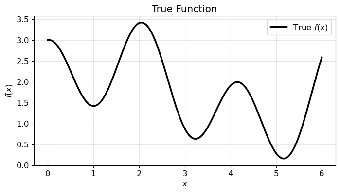
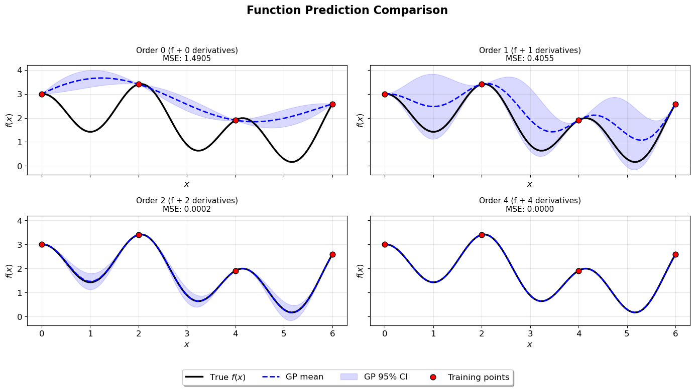

1D Arbitrary Order Derivative-Enhanced Gaussian Process Numerical Example#
This example demonstrates Arbitrary Order Derivative-Enhanced Gaussian Processes (DEGPs) for modeling a 1D function. We train DEGP models with derivative orders 0, 1, 2, and 4, and visualize predictions and derivative approximations.
Setup#
Import necessary packages and set plotting parameters.
import numpy as np
import matplotlib.pyplot as plt
import pyoti.sparse as oti
from jetgp.full_degp.degp import degp
import jetgp.utils as utils
import time
plt.rcParams.update({'font.size': 12})
Target Function#
We model the following 1D function:
over the domain \(x \in [0, 6]\). The following plot shows the function.
# Domain
lb_x, ub_x = 0, 6.0
num_plot_pts = 500
X_plot = np.linspace(lb_x, ub_x, num_plot_pts).reshape(-1,1)
# Define function
def true_function(X, alg=oti):
x = X[:, 0]
return alg.exp(-x) + alg.sin(x) + alg.cos(3 * x) + 0.2 * x + 1.0
# Compute function values
y_plot = true_function(X_plot, alg=np)
# Plot
plt.figure(figsize=(8,4))
plt.plot(X_plot, y_plot, 'k-', lw=2.5, label='True $f(x)$')
plt.xlabel('$x$')
plt.ylabel('$f(x)$')
plt.title('True Function')
plt.grid(True, alpha=0.3)
plt.legend()
plt.show()

Define Parameters#
num_training_pts = 4
num_test_pts = 100
orders_to_test = [0, 1, 2, 4]
kernel = "SE"
kernel_type = "anisotropic"
n_restarts = 15
swarm_size = 150
normalize_data = False
Parameter Explanation#
The following parameters control the DEGP training and evaluation:
`lb_x` and `ub_x`: The lower and upper bounds of the 1D input domain.
`num_training_pts`: Number of training points used to fit the GP. These points are equally spaced in the domain.
`num_test_pts`: Number of points in the test grid for evaluation and plotting.
`orders_to_test`: List of derivative orders to include when training the GP. An order n DEGP uses derivatives up to n-th order at each training point.
`kernel` and `kernel_type`: Specify the covariance kernel and whether it is isotropic or anisotropic.
`n_restarts` and `swarm_size`: Hyperparameter optimization settings controlling the number of optimizer restarts and swarm size for PSO.
`normalize_data`: If True, training data and derivatives are normalized before fitting the GP.
Increasing the derivative order increases the number of observations per training point, improving the model’s ability to capture local curvature but also increasing computational cost.
Train and Evaluate DEGP Models#
For each derivative order, we train a Derivative-Enhanced Gaussian Process (DEGP) model. The workflow is as follows:
Derivative Index Generation: Using utils.gen_OTI_indices, we generate der_indices which enumerate the multi-index sets corresponding to all partial derivatives up to the specified order. In 1D, this simply corresponds to derivatives of order 1, 2, …, up to the requested maximum order.
Hypercomplex Automatic Differentiation: The oti.array structure allows us to represent training inputs in a hypercomplex algebra. By adding oti.e(1, order=order) to the input array, we tag each point with hypercomplex elements enabling automatic differentiation. Evaluating true_function on this hypercomplex array yields both the function value and all requested derivatives via the get_deriv method.
Training Data Construction: - y_train_hc.real contains the standard function values at each training point. - y_train_hc.get_deriv(der_indices[i][j]) extracts the value of each derivative according to the multi-index sets generated. - The full list y_train_list is then supplied to the DEGP constructor.
DEGP Model Initialization: The degp constructor takes: - X_train: the training input points. - y_train_list: a list of function and derivative observations. - order: maximum derivative order. - der_indices: the derivative multi-indices. - Kernel and normalization options (kernel, kernel_type, normalize).
This fully specifies the DEGP problem, enabling the model to condition on both function and derivative observations.
Hyperparameter Optimization: The model hyperparameters are optimized using a combination of restarts (n_restart_optimizer) and a particle swarm (swarm_size) for global optimization.
Prediction: Once trained, gp.predict computes: - The posterior mean for the function (and derivatives if requested) - Variance estimates for uncertainty quantification - Only the function predictions are used for computing MSE in this tutorial, though derivative predictions are available for analysis.
Below is the function that implements this procedure:
def train_and_evaluate_degps(X_train, X_test, true_function, order):
print(f"Processing Order {order}...")
start_time = time.time()
# Generate Training Data with Derivatives
der_indices = utils.gen_OTI_indices(1, order)
X_train_pert = oti.array(X_train) + oti.e(1, order=order)
derivative_locations = []
for i in range(len(der_indices)):
for j in range(len(der_indices[i])):
derivative_locations.append([i for i in range(len(X_train ))])
y_train_hc = true_function(X_train_pert)
y_train_list = [y_train_hc.real]
for i in range(len(der_indices)):
for j in range(len(der_indices[i])):
derivative = y_train_hc.get_deriv(der_indices[i][j]).reshape(-1, 1)
y_train_list.append(derivative)
# Initialize and train DEGP model
gp = degp(
X_train, y_train_list, order, n_bases=1, der_indices=der_indices,derivative_locations = derivative_locations,
normalize=normalize_data, kernel=kernel, kernel_type=kernel_type
)
params =gp.optimize_hyperparameters(
optimizer='jade',
pop_size = 100,
n_generations = 15,
local_opt_every = None,
debug = True
)
# Predict function and derivatives
y_pred_full, y_var_full = gp.predict(X_test, params, calc_cov=True, return_deriv=False)
# Compute MSE for function predictions only
y_pred_func = y_pred_full[:num_test_pts]
y_true_flat = true_function(X_test, alg=np).ravel()
mse = np.mean((y_pred_func.ravel() - y_true_flat)**2)
print(f" MSE: {mse:.6f}, Time: {time.time() - start_time:.2f}s")
return {
'y_pred_full': y_pred_full,
'y_var_full': y_var_full,
'mse': mse,
'time': time.time() - start_time,
'n_observations': sum(len(y) for y in y_train_list)
}
Run DEGP Models for All Orders#
X_train = np.linspace(lb_x, ub_x, num_training_pts).reshape(-1, 1)
X_test = np.linspace(lb_x, ub_x, num_test_pts).reshape(-1, 1)
results = {}
for order in orders_to_test:
results[order] = train_and_evaluate_degps(X_train, X_test, true_function, order)
Processing Order 0...
Gen 1: best f=8.555515100592274
Gen 2: best f=8.555515100592274
Gen 3: best f=8.555515100592274
Gen 4: best f=8.555515100592274
Gen 5: best f=8.199102832031281
Gen 6: best f=8.199102832031281
Gen 7: best f=8.199102832031281
Gen 8: best f=8.108279627133218
Gen 9: best f=8.108279627133218
Gen 10: best f=8.060756341668167
Gen 11: best f=8.060756341668167
Gen 12: best f=8.060756341668167
Gen 13: best f=8.053839290000669
Gen 14: best f=8.053839290000669
Gen 15: best f=8.053556753787092
MSE: 1.490532, Time: 0.35s
Processing Order 1...
Gen 1: best f=23.265770371412046
Gen 2: best f=23.265770371412046
Gen 3: best f=18.860075205895782
Gen 4: best f=18.860075205895782
Gen 5: best f=18.860075205895782
Gen 6: best f=18.860075205895782
Gen 7: best f=18.718450216471183
Gen 8: best f=18.718450216471183
Gen 9: best f=18.718450216471183
Gen 10: best f=18.663849108710146
Gen 11: best f=18.663849108710146
Gen 12: best f=18.663849108710146
Gen 13: best f=18.663849108710146
Gen 14: best f=18.663849108710146
Gen 15: best f=18.663849108710146
MSE: 0.358957, Time: 0.76s
Processing Order 2...
Gen 1: best f=30.7077866284139
Gen 2: best f=30.657936786251177
Gen 3: best f=30.657936786251177
Gen 4: best f=30.657936786251177
Gen 5: best f=29.66586574120022
Gen 6: best f=29.66586574120022
Gen 7: best f=29.32791640335701
Gen 8: best f=29.32791640335701
Gen 9: best f=29.32791640335701
Gen 10: best f=28.898506157593737
Gen 11: best f=28.883194646122618
Gen 12: best f=28.883194646122618
Gen 13: best f=28.883194646122618
Gen 14: best f=28.775505908596926
Gen 15: best f=28.775505908596926
MSE: 0.000147, Time: 0.60s
Processing Order 4...
Gen 1: best f=49.39731940842675
Gen 2: best f=41.41641841823673
Gen 3: best f=41.41641841823673
Gen 4: best f=34.111617946575386
Gen 5: best f=34.111617946575386
Gen 6: best f=34.111617946575386
Gen 7: best f=34.111617946575386
Gen 8: best f=34.111617946575386
Gen 9: best f=33.84548448680795
Gen 10: best f=33.84548448680795
Gen 11: best f=33.84548448680795
Gen 12: best f=33.84548448680795
Gen 13: best f=33.11463542387228
Gen 14: best f=33.11463542387228
Gen 15: best f=33.11463542387228
MSE: 0.000000, Time: 0.60s
Display Summary#
print("RESULTS SUMMARY")
print("="*60)
print(f"{'Order':<8}{'MSE':<12}{'Time (s)':<10}{'Observations'}")
print("-"*60)
for order, r in results.items():
print(f"{order:<8}{r['mse']:<12.6f}{r['time']:<10.2f}{r['n_observations']}")
RESULTS SUMMARY
============================================================
Order MSE Time (s) Observations
------------------------------------------------------------
0 1.490532 0.35 4
1 0.358957 0.76 8
2 0.000147 0.60 12
4 0.000000 0.60 20
Visualize Function Predictions#
import math
n_orders = len(orders_to_test)
n_cols = 2
n_rows = math.ceil(n_orders / n_cols)
fig, axs = plt.subplots(n_rows, n_cols, figsize=(7*n_cols, 4*n_rows), sharex=True, sharey=True)
axs = axs.flatten()
y_true = true_function(X_test, alg=np)
y_train_func = true_function(X_train, alg=np)
for i, order in enumerate(orders_to_test):
ax = axs[i]
r = results[order]
y_pred = r['y_pred_full'][:num_test_pts]
y_var = r['y_var_full'][:num_test_pts]
ax.plot(X_test, y_true, 'k-', lw=2.5, label="True $f(x)$")
ax.plot(X_test, y_pred.flatten(), 'b--', lw=2, label="GP mean")
ax.fill_between(
X_test.ravel(),
y_pred.ravel() - 2*np.sqrt(y_var.ravel()),
y_pred.ravel() + 2*np.sqrt(y_var.ravel()),
color='blue', alpha=0.15, label='GP 95% CI'
)
ax.scatter(X_train, y_train_func, c='red', s=60, zorder=5,
edgecolors='black', linewidth=1, label="Training points")
# Title with order and number of derivatives
num_derivatives = sum(len(group) for group in utils.gen_OTI_indices(1, order))
ax.set_title(f"Order {order} (f + {num_derivatives} derivatives)\nMSE: {r['mse']:.4f}", fontsize=11)
ax.set(xlabel="$x$", ylabel="$f(x)$")
ax.grid(True, alpha=0.3)
# Hide any extra subplots if n_orders < n_rows*n_cols
for j in range(i+1, n_rows*n_cols):
fig.delaxes(axs[j])
fig.suptitle('Function Prediction Comparison', fontsize=16, fontweight='bold', y=0.98)
handles, labels = axs[0].get_legend_handles_labels()
fig.legend(handles, labels, loc='lower center', bbox_to_anchor=(0.5, 0.02), ncol=len(handles), frameon=True, fancybox=True, shadow=True)
plt.tight_layout(rect=[0, 0.1, 1, 0.95])
plt.show()
